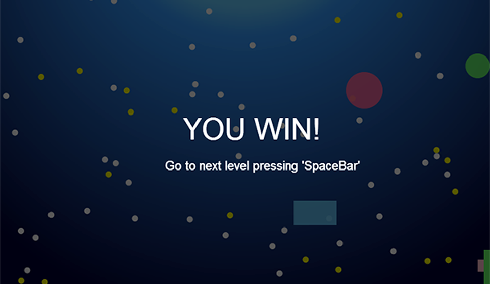
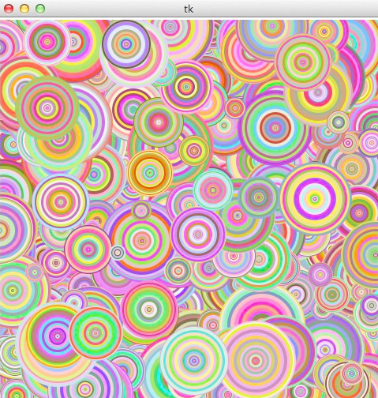

Coding & Design
Ha, it basically "teaches me another way of how to think (-from Steve Jobs)", and at the same time I got a lot of benefits while doing design work.
At very beginning I was usually felt frustrated as design goes deep, normally at iteration stage, that the design decision was always not feasible enough. I decided to know more about things behind - the basic coding concepts helped me to make more solid progress.
I took some fundamental CS classes when I was at Carnegie Mellon (15112 Fundamentals of Programming, 15237 Cross-Platform Mobile Web Apps). Those are really great sources that made me become more interested in programming, and equipped me with a basic programming skill.
After CMU, I learned it by myself, making use of various online resources. I feel its another experience of problem solving, not simple but fun!
Ha, it feels so great, because:
1 Coding helps me think.
consider more about feasibility of product while doing design.
2 Coding facilitates good communication.
In my experience, I feel using engineers' language to talk about design and working collaboratively is super cool and I believe it's a crucial part to product development circle.
3 Coding is fun when comes with design.
Alive real prototype will connect isolate design mock-ups, and make the design solution more fluent and logically clear.
Fish On Diet
(Click HERE or the image below to start the game)

Programming: HTML 5, Javascript, CSS
Programmer & Designer: Jingyi Feng
Date: February 2013
Oride
Programming: Javascript, jQuery, HTML 5, CSS, Node JS
Programmer: Jingyi Feng, Aaron Hsu
Designer: Jingyi Feng
Date: April 2013
ThankU & Wishes Leaf
Programming: Python, Open CV, HTML5, CSS
Programmer & Designer: Jingyi Feng
Date: December 2012
Fun Circle

Programmer & Designer: Jingyi Feng
Programming: Python
Date: September 2012